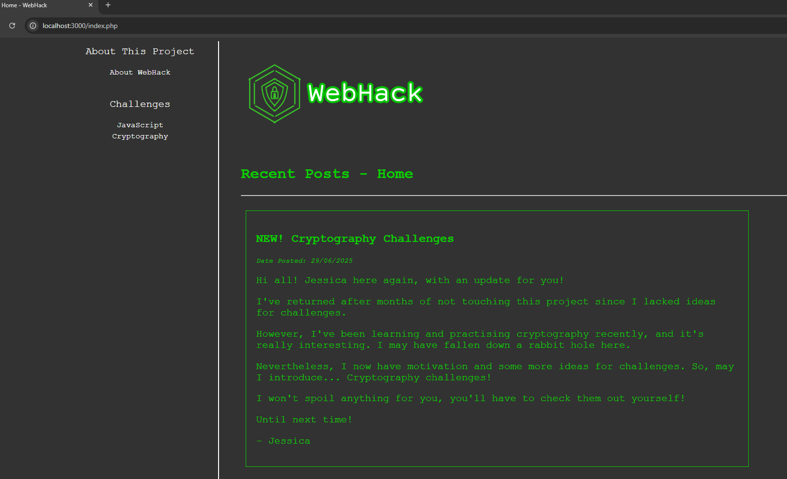
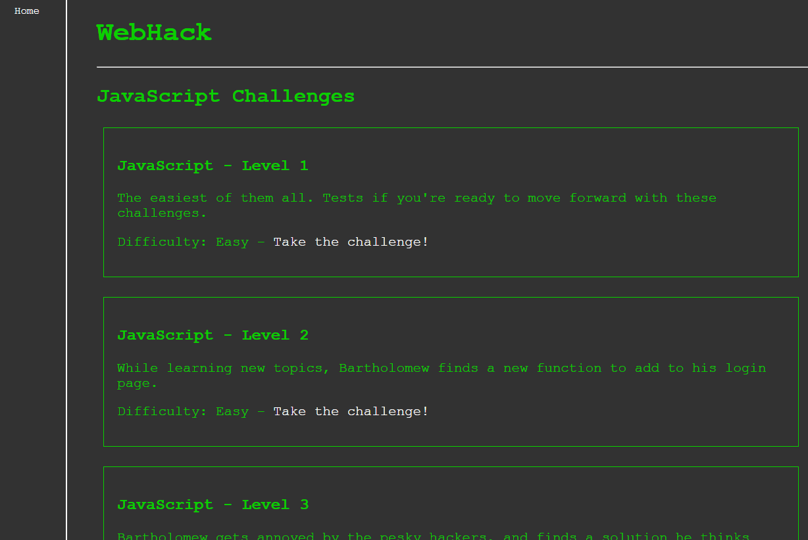
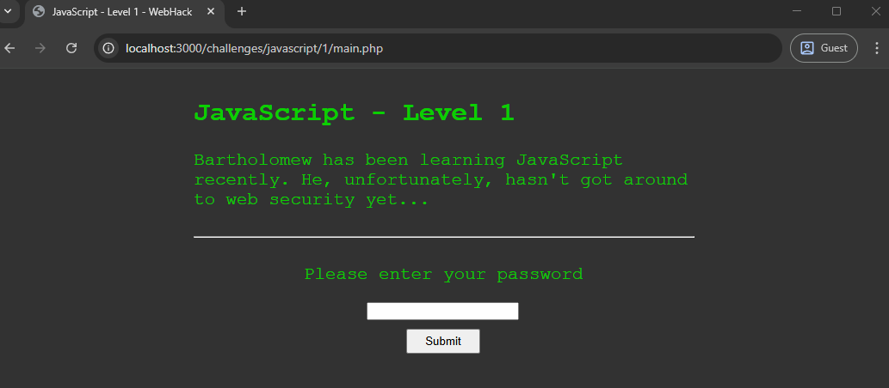
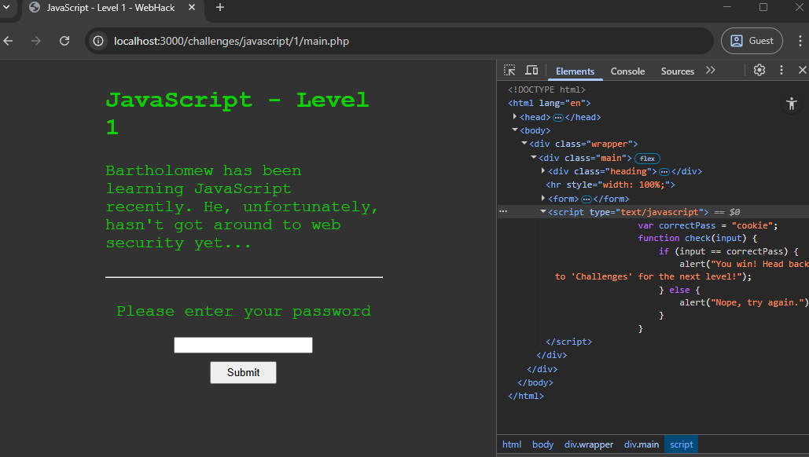
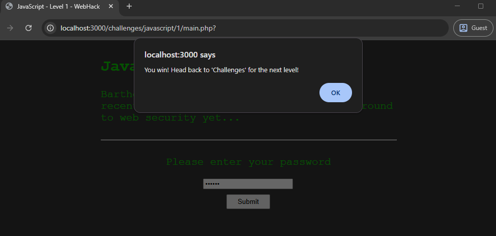
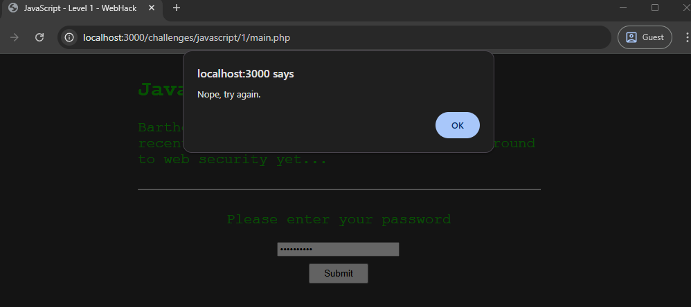
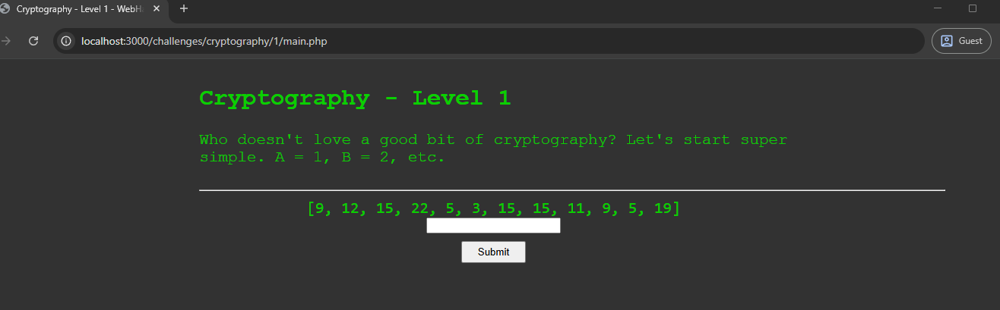
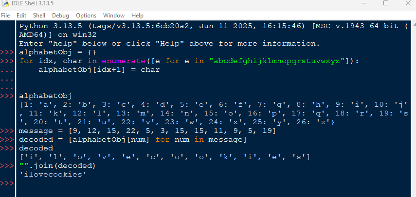
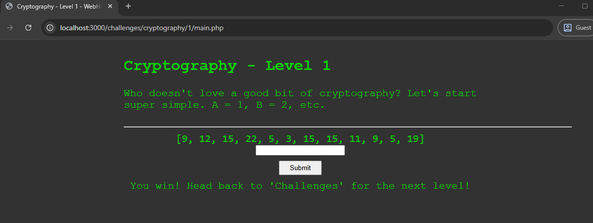
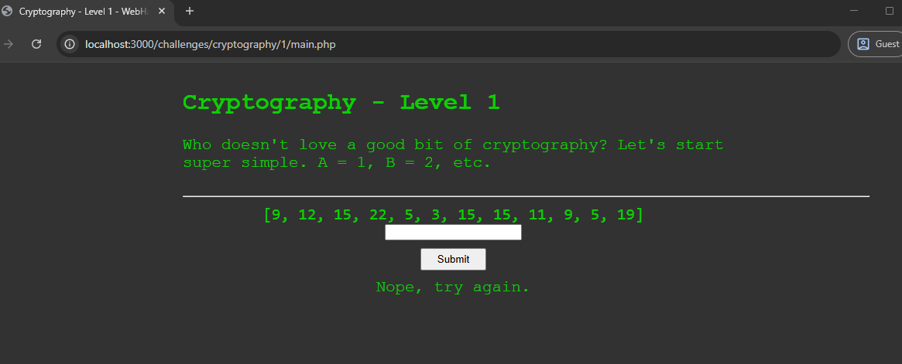

WebHack is the site, written in PHP, for hackers, new and experienced, to test their hacking skills in a safe and friendly environment. Here, you will learn Cyber Security for websites, and get hands-on practice with challenges.
This site was created by only myself, and I'm very excited when the site is at the stage to be published online one day.
The following screenshot depicts the minimal design for the homepage. This may be subject to change in the near future.
Our focus is on website security, and keeping your website secured from pesky hackers. From the simplest ways of security, to more advanced security measures.
We also touch on cryptography and the importance of censoring personal information, as well as ways to crack many different ciphers, so you understand how they work and what you can do to make your system uncrackable.
WebHack was first created on the 16th January 2025, and is yet to be released publicly. Its primary inspiration was from a site called HackThisSite, a site dedicated to helping hackers, ranging from new to experienced, to improve upon their security skills by completing challenges.
These challenges would either be a dummy login page, or an entire dummy website, with intentional bugs and weaknesses. A user would be asked to find some sort of password to gain access to the system by finding those weaknesses.
As time went on, I grew a liking towards cryptography and staganography, and began to understand their roles in website security. That's when I started finding and completing cryptography challenges from many different websites, such as CryptoHack and CryptoPals.
At the current time of writing this article, WebHack provides 2 types of challenges; JavaScript and Cryptography. Let's first look at the JavaScript challenges.
The following screenshot depicts the main page for the JavaScript challenges. This may be subject to change in the near future.
Each challenge has a small description, followed by its difficulty and a button entitled "Take this challenge!" that takes you to that challenge.
Firstly, for this showcase, I will show and solve the very first level of the JavaScript challenges. Let's open "JavaScript - Level 1" and take a look at the challenge.
We're introduced to this character known as "Bartholomew" (I know, great name) who's just starting to learn JavaScript, and that he doesn't know anything about website security.
We need a password to pass the level, and of course, the password won't be shown immediately to us, so we need to do a small amount of digging to get it.
There's two ways to use JavaScript in a website; with the <script> tag then code inside of it, or with the same tag but specifying an external source file with the JavaScript code inside.
Knowing this, we can check the website's code to spot any JavaScript. We can do this by right clicking anywhere on the webpage, and selecting "Inspect" or "Inspect Element"
Check the <script> tag, "Bartholomew" has created a function to check if a password is correct. Look closer, and you can see the correct password in the variable 'correctPass'.
The correct password is 'cookie'! Typing that into the given input box, we get the following output.
Hooray! We completed the challenge! However, if you type the incorrect password, this is what you will see.
That's the JavaScript challenge! Of course, there's a few more, but we won't go through them in this article.
I will now show and solve the very first level of the Cryptography challenges. Let's open "Cryptography - Level 1" and have a look at the challenge.
We're starting very simple with this first level. A list of numbers, and in the description, it states "A = 1, B = 2, etc.". Going by this logic, we need to take each number and get its corresponding letter. I wrote a very simple Python script in Python's IDLE that does the job for me.
According to my script, the decoded message is "ilovecookies"! Let's type that in and see what the webpage says.
Nice! We've completed another challenge! Now, if we typed the wrong password, this is what you will see.
That's the Cryptography challenge! Of course, there's a few more, but we won't go through them in this article.
So, there you have it, a small showcase of WebHack and what it's all about. Of course, with most software, things can be subject to change, so be aware of that!
If you have any feedback for me (which I would love to hear!), all of my contact details can be found on the homepage.
Thank you very much for reading this article, and I hope you enjoyed reading about WebHack.
Until next time!